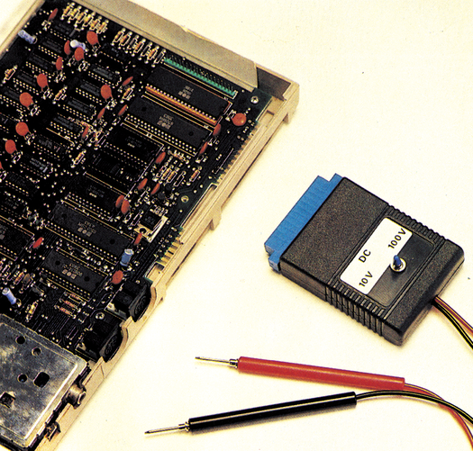

Digitalvoltmeter für den C 64/C 128
Wem ein analoges Voltmeter zu ungenau und wer bei Messungen auf genaue Zahlenwerte angewiesen ist, dem bleibt nur die Anschaffung eines Digitalvottmeters. Erweitern Sie Ihren Computer zum Digitalvoltmeter.
Ein Multimeter ist bei fast jedem Elektronikbastler zu finden. Sie sind recht vielseitig, meist klein und handlich. Sie haben einen großen Drehknopf, zum Einstellen der Meßbereiche und ein Zeigermeßinstrument für die Anzeige. Will man einen Wert, zum Beispiel 2,55 Volt, ablesen, ist man auf das Schätzen angewiesen, denn die Zeigerspitze steht zwischen zwei Strichen. Einen exakten Zahlenwert liefert uns dagegen nur ein Digitalvoltmeter (Bild 1).

Das Herz eines Digitalmeßsystems ist der Analog-/ Digital-Wandler. Er übernimmt die Umsetzung einer analogen Spannung in einen digitalen Zahlenwert. Wo liegt der Unterschied zwischen einer digitalen und einer analogen Größe? Ein digitaler Wert kennt nur zwei Zustände, also zum Beispiel 5 Volt oder 0 Volt. Ein analoger dagegen ist nicht fixiert, dieser Wert kann zwischen 0 und unendlich liegen. Um die Funktion eines A/D-Wandlers zu verdeutlichen, greifen wir eine von mehereren Wandlungsarten heraus: Eine Referenzspannung wird in kleinen Schritten erhöht und mit dem Meßwert verglichen. Die Anzahl der Schritte bis zum Ausgleich ergeben den Digitalwert.
Die Meßbereiche sind in der Regel recht klein (zum Beispiel ICL7106 von -200mV bis + 200mV), dafür aber recht empfindlich. Die kleinste lesbare Größe liegt bei zirka 100 ^Volt. Mit einem Spannungsteiler kann dieser Bereich, auch auf größere Meßwerte erweitert werden. Mit einer Schaltungserweiterung lassen sich Ströme, Wechselspannungen, Widerstände, Kapazitäten und Induktivitäten messen.
Der Computer fragt die Schnittstelle mit dem A-/D-Wandler in regelmäßigen Abständen ab. Er berichtigt den Wert um den Faktor der Spannungsteilung und gibt ihn an den Benutzer aus. Je nach dem, wie oft die Werte ausgelesen werden, können auch Spannungsverläufe sichtbar gemacht werden. Hier liegt aber auch die Grenze der Digitalmeßsysteme, da die Meßzeiten nicht unter 20 Millisekunden gebracht werden können (Taktrate des Computers) oder die Auflösung nicht ausreicht (8 Bit A/D-Wandler). Die Dokumentation der Meßwerte kann über alle Peripherie-Geräte, wie Bildschirm, Drucker, Plotter ausgegeben werden.
(do)